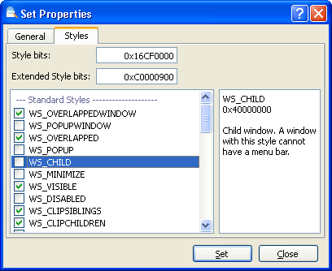

In toevoeging op de venster eigenschappen, zoals afmetingen en tekst, kan de venster stijl ook worden aangepast. Alle vensters hebben diverse stijlen die hun uiterlijk en gedrag bepalen. De meeste standaard Windows besturingen zoals Button en Edit hebben ook specifieke stijlen die enkel op hen van toepassing zijn.
Om de stijl van een venster aan te passen, klik je met rechts op dat venster in de boom en selecteer "Bewerk Venster Stijlen" om het "Bewerk Eigenschappen" dialoog te openen op de stijlen tab. Je kunt ook de "Bewerk Eigenschappen..." openen en dan naar de stijlen tab gaan.

Het "Bewerk Eigenschappen" dialoog van de stijlen tab
| Stijl bits, Uitgebreide Stijl bits | Als je de stijlen knipt en plakt van een ander venster of je kent de specifieke bits, dan kun je deze direct invoeren als decimale of hexadecimale code. |
| Stijl lijst | Toont een lijst van stijlen voor het venster. Standaard stijlen als eerst, daarna de toegevoegde stijlen. Het rechterpaneel toont de waarden en een beschrijving van de geselecteeerde stijlen. |